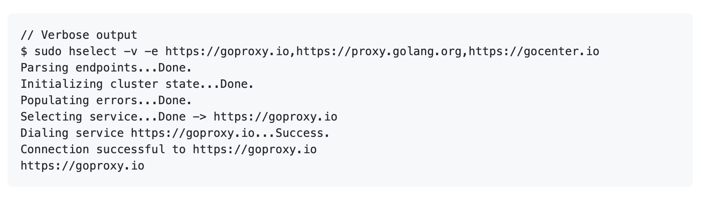

Open Source
Apart from my work, I actively contribute to open source. My primary focus areas are networking, distributed systems and protocols. I prefer to program in Go, which alongside C++, is my language of choice for most things. I am also an occasional user of Python, C#, Perl and R. Some of my projects in open source domain are listed below.
- ServiceQ
- Harmonic
- HSelect
- Frame-Cors
ServiceQ is a fault-tolerant gateway for HTTP clusters. It employs probabilistic routing to distribute load during partial cluster shutdown (k/n nodes experiencing downtimes, timeouts, connection loss etc) and buffers requests during total cluster shutdown (n nodes down). The buffered requests are forwarded in FIFO order when the cluster is available next. Below figure depicts a markov chain with respect to a single request event. Here, G=ServiceQ Gateway, PCS=Partial Cluster Shutdown, TCS=Total Cluster Shutdown, Q=Deferred Queue, R=Request and p=Probability.

Project link: gh/gptankit/serviceq
Complete wiki: serviceq wiki
Harmonic is the request dispatch algorithm powering ServiceQ. It is exposed in this package with enhanced support for managing cluster state and errors. Because harmonic is a stateful algorithm, it can quickly reduce the landing probability of future requests in order to reduce errors. It can be independently imported in any network application (client/server) that requires to make routing decisions. Below graph shows the landing probability (P) on a errored node (D) in a 8-node cluster with respect to number of requests (r). Notice how quickly the routing probability on D reduces as the requests on D start to fail. Depending on the rate of request, it will only take a few seconds (sometime even milliseconds) to move all requests away from D, thus ensuring more requests are routed to healthier nodes.

Project link: gh/gptankit/harmonic
HSelect is a command line utility for selecting a reliable service among a group of errored and non-errored services (mirrors). It uses harmonic dispatch algorithm for service selection and also updates harmonic with service errors if dial fails for the selected service. As harmonic can quickly adapt to varying error values, hselect can thus select a service with maximum probability of connection success. Output of hselect can also be piped to curl or wget for further downloads.

Project link: gh/gptankit/hselect
Frame-Cors is a JSON-based, highly configurable CORS manager for Asp.Net Web API. The CORS configuration is completely managed in a json object file with support for wildcard values and shadowing. It is published as a nuget package and has close to 3k downloads till date.
Project link: gh/gptankit/frame-cors
Nuget package: Frame.Cors